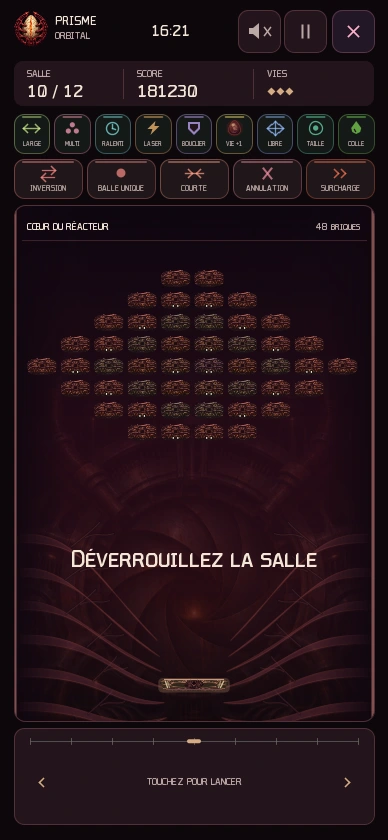
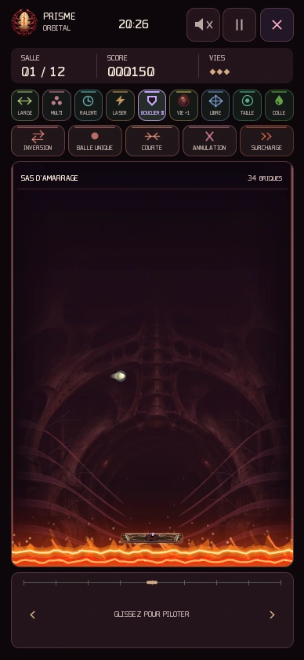
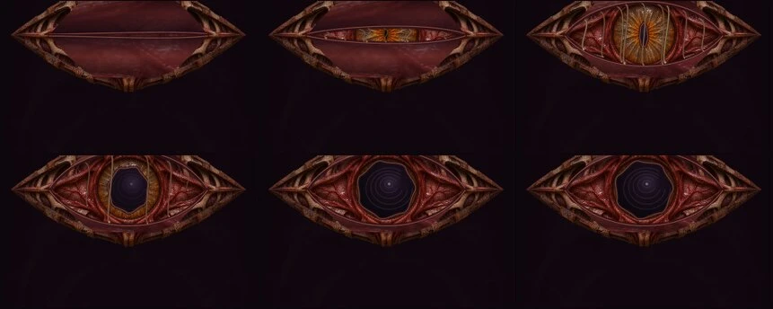

Le métal est vivant.
Retrouvez les sensations du casse-briques classique dans un univers de conduits organiques, de membranes et de salles biomécaniques. Chaque salle a sa propre structure et son atmosphère.





Chaque bonus peut changer la partie.
Prenez le contrôle de la raquette au pouce. Faites éclore les œufs, détruisez les obstacles, récupérez les mutations utiles et méfiez-vous des malus.

Laser organique
Charge progressive, tirs automatiques et activation temporaire. Les bonus successifs accélèrent la recharge.
Plasma et mutations
Bouclier cumulable sur trois niveaux, colle, déplacement libre, œufs multiples ou agrandis. Récoltez les rares vies supplémentaires.
Malus
Commandes inversées, raquette réduite, retour à un œuf unique ou annulation des effets.
Atmosphère sonore
Musiques sombres et bruitages organiques. Le son peut être coupé à tout moment.
Découvrir les salles et les bonus, avec des aides et la possibilité de continuer.
Le véritable défi arcade : pas de Continue après la défaite.
Plus exigeant, plus rapide, sans vie supplémentaire ni Continue.
Embarquez.
Téléchargez la version Android de Prisme Orbital gratuitement. Aucun compte GitHub nécessaire.
Télécharger Prisme Orbital v1.26Comment installer le jeu ?
- Téléchargez l'APK sur votre téléphone Android.
- Ouvrez le fichier téléchargé.
- Si Android vous le demande, autorisez l'installation depuis l'application qui ouvre le fichier. Ne le faites que si vous faites confiance à la provenance du fichier.
- Installez le jeu ; vous pouvez ensuite retirer cette autorisation.
v1.26 — Cinq langues
Français, anglais, espagnol, italien et allemand.